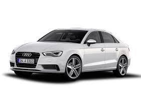

Future Cars
Audi A1
WAll models get an upmarket interior with premium materials, as well as a 6.5-inch display and three-spoke sports steering wheel. The entry-level Audi is a hugely desirable model for buyers looking to downsize from the likes of the larger A3 or A4. The Sportback commands a premium of around £600, with a variety of TDI diesel and TFSI engines available. Trim levels consist of SE, Sport and S line, with the range culminating in the super-quick S1 Sportback.
AThe Audi A1 Sportback remains a small car with limited practicality, but an extra set of rear doors adds another string to its bow. It also makes it a feasible option for families with small children. It features a wide range of diesel and petrol engines, all turbocharged and with stop start. Audi expects the A1 Sportback to make up two-thirds of A1 sales.

Audi A2
The Audi A2 (internally designated Typ 8Z)[1] is a compact MPV-styled supermini car, with a five-door hatchback body style and four or five seats,[1] produced by the German manufacturer Audi from November 1999 to August 2005.[1] Based on the Audi Al2 concept car first shown at the Frankfurt Motor Show in 1997,[3] the A2 was notable for being constructed from aluminium, which in combination with its efficient engines, made it an extremely economical car on fuel.
Packages available in Germany included 'Advance', 'Style', 'High Tech', and later 'S line'; whereas in the United Kingdom, the A2 was available in various trim levels, including: 'Standard', 'SE' (for 'Special Equipment'), 'Sport', 'Special Edition' (2005 only).

Audi A3
The Audi A3 is a Small Family/Compact car produced since 1996. The first two generations of A3 were based on the Volkswagen Group A platform, which they share with several other models such as the Audi TT, Volkswagen Golf, Volkswagen Caddy, and Volkswagen Touran, as well as SEAT León, SEAT Toledo, and Škoda Octavia. The third-generation A3 uses the Volkswagen Group MQB platform.
